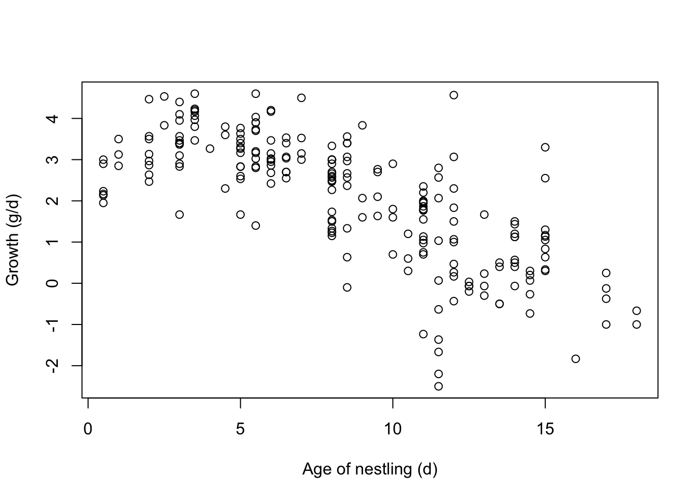

Chapter 12 Student projects
We encourage students to work on a research project during the course. We have compiled a list of suggested projects (see below) but students may come up with their own suggested project within the realm of bird and migration ecology (in the latter case, please come back to us before the course).
The projects should be pursued in groups of 2-4 students. During the last day of the course, we expect an oral presentation of approx. 10 min that should cover the project’s scientific background, approach, research aims, results and a discussion. Ideally, the presentation is held jointly by the members of each group but if, for various reasons, this is impossible, other options can be chosen.
12.1 Pre-requisite: Reading and assessing scientific publications
The projects require that students get familiar with some background and/or recent developments in a specific research field by reading and summarizing a few papers. Here are a few tips that may serve as guidelines:
- Summarize the article
- Formulate the key message of the paper
- Summarize the approach used
- What is the general approach?
- How could you characterize the model?
- Which are the important variables and why?
- Which scenarios were run?
- Make your own assessment of the articles
- Was it a convincing article? Was the approach appropriate to study the research question? Are the results supported by the data, argumentation or other information?
- Do you have questions that you would like to discuss with colleagues or experts?
12.2 Student project 1: Phenology - Migration timing within the season and their changes over the years
Phenology characterises the temporal course of migration. Naturally, phenology has different aspects, e.g. how individuals of a species migrate in a particular season (spread-out or synchronized), how do migration pattern vary between seasons (e.g. spring and autumn migration), how do different species vary in their timing of migration (which species migrate late, which early), how much has the timing of migration (of a specific species) changed over the years, etc.
You may use one or more of the above questions as a starting point and develop your project from them.
The following papers may be inspiring to start with:
The project may include the following steps:
- Select a study species or species group
- Characterise the migration patterns that are relevant to your question, ideally from different angles (mean migration date, variance, etc.)
- Link the timing of migration to ecological variables, e.g. migration route, ecological characteristics of a species, etc.
- Time permitting, link the timing of migration to environmental variables, e.g. NDVI
Data required and R-analyses
- passage_by_spec_year.txt: Median passage day per year and species
- species_data.rda: ecological characteristica of species
You may use the following R-code to get started.
dat <- read.table("data/passage_by_spec_year.txt", header=TRUE, sep="\t")
# $ species : species nr = "artnr" in datspec
# $ year :
# $ mpassage : median passage day (day of year)
# $ min_passage: first passage day
# $ q10_passage: 10% quantile of passage day
# $ q20_passage: 20% quantile of passage day
# $ q80_passage: 80% quantile of passage day
# $ q90_passage: 90 % quantile of passage day
# $ max_passage: last passage day
# $ n : number of individuals
load("data/species_data.rda") # load data.frame "datspec"
# species names and characteristics of species-------------------------
# artnr: species number, see species data file
# latabk: abreviation of latin species name
# englname: english species name
# Weight: g
# FlightSpeed: m/s
# WingSpan(m): m
# WingArea(m2): m2
# DistanceBretolet_meanOrigi:n distance between Bretolet (ringing site)
# and centre of species breeding distribution
# Destination: non-breeding area
# diet_breeding_season: diet during the breeding season:
# Samen=seeds, Ins=insects, Pfl=plants
# diet_migration: diet during the breeding season:
# Samen=seeds, Ins=insects, Pfl=plants
# habitat_breeding: Feld=field, Sumpf=marsh, Wasser=water,
# Wald=forest, offener Wald=open forest, Luft=air,
# Busch=bush, Gras=gras, Schilf=reed, Conif=coniferous forest
# habitat_winter: Feld=field, Sumpf=marsh, Wasser=water, Wald=forest,
# offener Wald=open forest, Luft=air, Busch=bush, Gras=gras,
# Schilf=reed, Conif=coniferous forest
# migratory_activity: n= nocturnal migrant, t=diurnal migrant,
# t+n= migrates both at night and day
# migdist_cat: l=long-distance migrant, k=short-distance migrant
# Passeres: 0= non-Passeriformes, 1=Passeriformes
# Example 1: Standard deviation of median passage day across years for the Robin
sd(dat$max_passage[dat$species==4000])## [1] 7.416627# Example 2: long-term change in median passage day for the Robin
index <- dat$species==4000
plot(dat$year[index], dat$mpassage[index], xlab="Year", ylab="Median passage day", main="Robin")
mod <- lm(mpassage~year, data=dat[index,])
abline(mod)
newdat <- data.frame(year=1976:2018)
newdat$lwr <- predict(mod, newdata=newdat, interval="confidence")[,2]
newdat$upr <- predict(mod, newdata=newdat, interval="confidence")[,3]
lines(newdat$year, newdat$lwr, lty=3)
lines(newdat$year, newdat$upr, lty=3)
12.3 Student project 2: Long-term changes in morphology
Which morphological measure is relevant to migration or other life-history processes? Wing length is obviously an important determinant of flight costs. Has wing length changed over the years in specific species? Are there patterns, e.g. in short- and long-distance migrants? How could this pattern be explained, i.e. which processes or constraints may play a role?
The following papers give some background on relevance: - Hahn et al. (2016) - Salewski, Hochachka, and Fiedler (2010)
Data required and R-analyses
- Analyse species-specific ringing lists
- Select a morphological measure
- Analyse their summary statistics over the years, separately for species, sexes, etc.
12.4 Student project 3: Differential Migration
Do young and old birds or males and females migrate at different times? If such sub-groups migrate at different times in specific species, what could explain these patterns?
Potential study species and questions:
age-differences in reed warblers
age- and sex-differences in chaffinches.
Analyse species-specific ringing lists
12.5 Student project 4: Flight energetics in the course of a night and over the season
Analyse how fat reserves change over the night or day and over the season. Possible questions to be asked are:
- How far can birds fly with what fat reserves?
- How does wing shape and weight of the bird influence the energy needed for flight?
- Does expected energy expenditure per hour flight correspond to the decrease of fat reserves?
- What factors influence flight energy?
# you will get the ring list to analyse how fat reserves
# change over the night and over seasons
# use the R-package afpt to answer questions like
library('afpt')## Warning: Paket 'afpt' wurde unter R Version 4.2.3 erstellt# define myBird, use data of a robin
myBird <- Bird(
massTotal = 0.015,
wingSpan = 0.15,
wingArea = 0.0085,
name = 'Robin',
name.scientific = 'Erithacus rubecula',
type = 'passerine',
source = 'gestimated by fk'
)
speed <- seq(3,18,length.out=10) # airspeed in m/s
powercurve <- computeFlappingPower(myBird,speed)
par(mar=c(3.1,3.1,0.4,1.1),mgp=c(1.9,0.7,0.0),cex=0.75)
with(powercurve , plot( speed,power,
type='b', pch=15, col='grey20',
xlab=NA, ylab=NA, xlim=c(0,18), ylim=c(0,1.1)))
mtext(side = 1, line = 2,'Speed (m/s)')
mtext(side = 2, line = 2,'Power (J/s)')
abline(h=min(powercurve$power), col=grey(0.6))
abline(0,0.033, col=grey(0.8))
12.6 Student project 5: Estimate survival from capture-recapture data
Marking and recapturing individual birds allows for estimating apparent survival probability (= the probability that a bird survives and returns to the breeding site). Do survival probabilities correlate with conditions in the wintering area?
Analyse a mark-recapture data set of reed warblers from a constant ringing effort site or from Snowfinches ringed year-round in the Alps.
An introduction on how survival is estimated based on mark-recapture data is given during the second course day.
12.7 Student project 6: Modelling spring migration: several questions
Read Chapter Migration Models for background on state-dependent migration models, what they can do and what they can’t.
Exemplary questions that could be tackled with such a model are:
- Long-term changes in migration phenology - which site conditions make animals change their migration timing?
- What are the consequences of climate-driven changes in site-conditions on timing and/or success of migration?
- What are the consequences of human actions, e.g. hunting, on migration success?
Download the model’s R-code from GitHub link - you may need to install additional R-packages like devtools, Rtools, zoo, maptools.
- Run the model using the standard parameter setting.
- Change one parameter at a time and observe which output measures change
- Develop an ecological question that you would like to tackle
- Come up with a plan of how to test your own question(s)
- which parameters would you need to change,
- change parameters by how much,
- which output measures would you look at, etc.
- Run the respective scenarios
- Analyse the results
- Evaluate the results
12.8 Student project 7: Estimating Migration volume
Why would it be important to quantify the number of birds migrating? Look for possible reasons at Chapters 7 and 8.
- What is the total number and biomass of birds migrating?
- Are there changes in numbers and biomasses over the past decades?
- What might have caused these changes and which consequences could they have?
Analyse overall ringing lists over the years
12.9 Student project 8: Why is timing in spring important?
Finding the optimal time for reproduction is important for many species. In this project, you ask why is timing important based on literature and based on a small data set on nestling growth rate.
The data contain nestling growth rates of Snowfinches Montifringilla nivalis and some predictors such as the age of the nestlings, the number of nestlings in the brood and how strongly snow was melting. The Snowfinch is a partial migrant. Use the data to answer how strongly nestling growth is related to snowmelt.
Use the result as a motivation to discuss the importance of timing and possible consequences of climate change on breeding success.
Naef-Daenzer and Keller (1999) Lerche-Jørgensen et al. (2018) Schano et al. (2021)
load("data/nestling_growth.rda")
# 'data.frame': 214 obs. of 7 variables:
# $ broodID : ID of brood
# $ ringnr : ID of individual
# $ age_nestling: age of individual in days (0 = hatching day)
# $ weight : weight in g
# $ growth : average daily change of weight during the last 3 days
# $ Nb_chicks : number of nestlings in the brood
# $ snow_change : % decrease of snow cover per day during the 3 days matching the measure of growth rate
plot(growth~age_nestling, data=dat, xlab="Age of nestling (d)", ylab="Growth (g/d)")
12.10 Student project 9: Geolocation - tracking small birds
Where and when birds migrate is typically investigated with individual tracking methods ??. Among the various devices that exist to date, geolocators have been particularly useful for small (light-weight) birds. However, to get from the light patterns they record to positions requires advanced methods. A manual has been produced that details the necessary steps, the potential pitfalls and their solutions link.
In this project, students apply existing analytical methods to individual geolocator data from selected species and:
- Analyse light patterns from geolocator recordings
- Translate a time series of light levels into geographical locations and present them on maps
- Derive the schedule of movements throughout the year